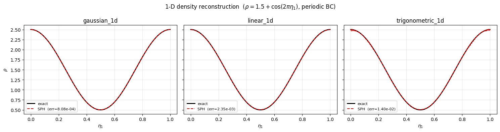
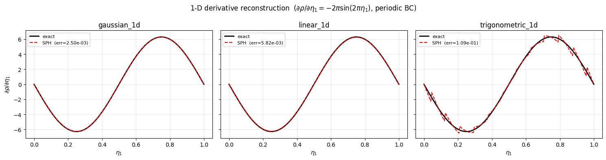
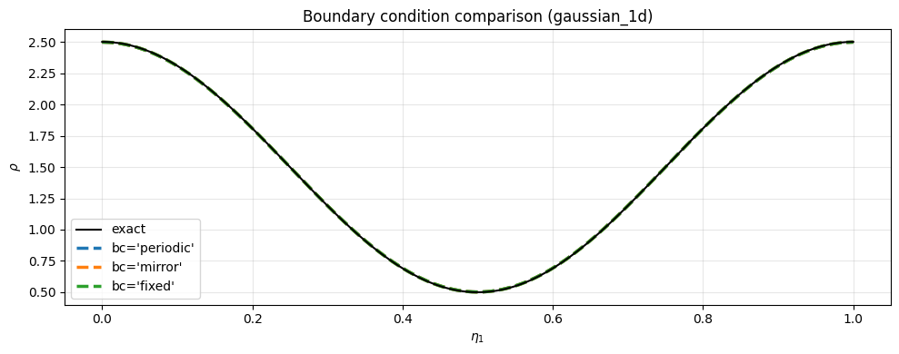
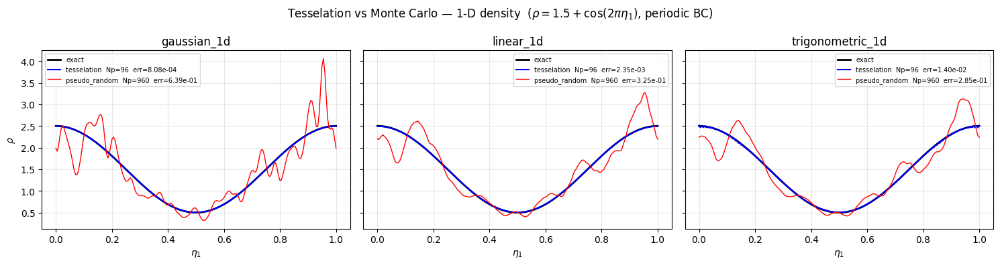
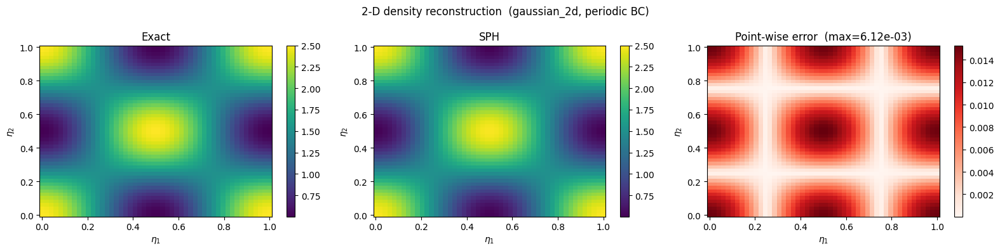
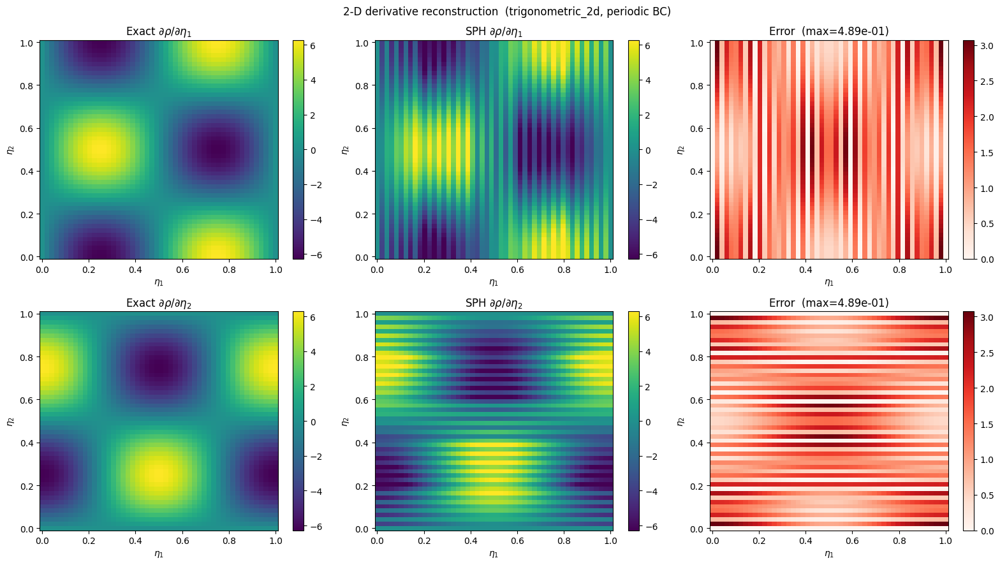
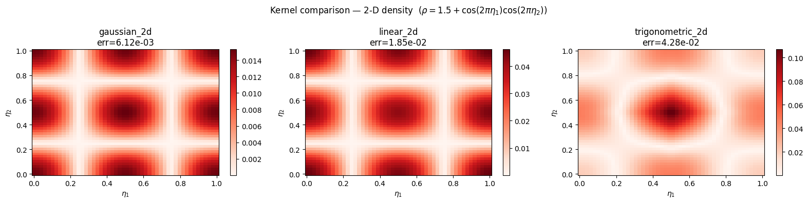

SPH Evaluation Kernels#
This tutorial shows how to use the SPH (Smoothed Particle Hydrodynamics) evaluation machinery in Struphy to reconstruct a smooth field from particle data, and to verify correctness by comparing against known exact solutions.
The core idea: given \(N\) particles with positions \(\boldsymbol{\eta}_j \in [0,1]^3\) and scalar weights \(\rho_j\), the SPH estimate of \(\rho\) at an arbitrary point \(\boldsymbol{\eta}\) is
where \(W_h\) is a smoothing kernel with bandwidth \(h\). The gradient can be evaluated by differentiating the kernel:
What this tutorial covers
1-D density reconstruction — value and first derivative, periodic and non-periodic boundary conditions, three kernel families.
2-D density reconstruction — the same workflow on a meshgrid, with a colour-plot comparison against the exact field.
The evaluation is triggered via ParticlesSPH.eval_density, which internally dispatches to the box-based kernel in struphy.pic.sph_eval_kernels (an \(\mathcal{O}(1)\)-per-point algorithm that restricts the kernel sum to the 27 neighbouring sorting boxes).
[1]:
import numpy as np
import matplotlib.pyplot as plt
from struphy import (
BoundaryParameters,
LoadingParameters,
SortingParameters,
domains,
perturbations,
)
from struphy.fields_background.equils import ConstantVelocity
from struphy.pic.particles import ParticlesSPH
Part 1 — 1-D density reconstruction#
Problem setup#
We want to reconstruct the density field
from \(N\) particles whose weights \(\rho_j\) are set by this exact function.
The domain is a 3-D cuboid — the \(\eta_2, \eta_3\) directions are kept trivial (l2=r2, l3=r3 effectively, all action is in \(\eta_1\)). We use a tesselation loading strategy (particles placed on a regular lattice) so the reconstruction error is controlled by the lattice spacing rather than Monte Carlo noise.
[2]:
# Cuboid domain: non-unit physical size, but the SPH evaluation is in logical space [0,1]^3
domain_1d = domains.Cuboid(l1=1.0, r1=2.0, l2=10.0, r2=20.0, l3=100.0, r3=200.0)
# Background equilibrium: constant density n0 = 1.5
background_1d = ConstantVelocity(n=1.5, density_profile="constant")
background_1d.domain = domain_1d
# Density perturbation: rho = n0 + cos(2 pi eta1)
pert_1d = {"n": perturbations.ModesCos(ls=(1,), amps=(1.0,))}
# Exact field and its eta1-derivative
rho_exact = lambda e1, e2, e3: 1.5 + np.cos(2 * np.pi * e1)
drho_exact = lambda e1, e2, e3: -2 * np.pi * np.sin(2 * np.pi * e1)
# Sorting: 24 boxes in eta1, 1 in eta2 / eta3 — purely 1-D
boxes_per_dim = (24, 1, 1)
sorting_params = SortingParameters(boxes_per_dim=boxes_per_dim)
# Kernel bandwidth = one box width in each dimension
h1 = 1 / boxes_per_dim[0]
h2 = 1 / boxes_per_dim[1]
h3 = 1 / boxes_per_dim[2]
# Evaluation grid (purely 1-D meshgrid)
n_eval = 200
eta1_pts = np.linspace(0, 1, n_eval)
eta2_pts = np.array([0.0])
eta3_pts = np.array([0.0])
ee1, ee2, ee3 = np.meshgrid(eta1_pts, eta2_pts, eta3_pts, indexing="ij")
print(f"Domain logical size: [0,1]^3 | Sorting: {boxes_per_dim}")
print(f"Kernel bandwidth h1={h1:.4f}, h2={h2:.4f}, h3={h3:.4f}")
Domain logical size: [0,1]^3 | Sorting: (24, 1, 1)
Kernel bandwidth h1=0.0417, h2=1.0000, h3=1.0000
1.1 Periodic boundary condition#
With a periodic BC the boundary layer receives contributions from particles on the opposite side of the domain. The mirror images are handled automatically inside the distance kernel.
[3]:
def make_particles_1d(bc_x, ppb=4, loading="tesselation"):
"""Construct and initialise a 1-D ParticlesSPH object."""
loading_params = LoadingParameters(ppb=ppb, seed=1607, loading=loading)
boundary_params = BoundaryParameters(bc_sph=(bc_x, "periodic", "periodic"))
particles = ParticlesSPH(
comm_world=None,
loading_params=loading_params,
boundary_params=boundary_params,
sorting_params=sorting_params,
bufsize=1.0,
domain=domain_1d,
background=background_1d,
perturbations=pert_1d,
n_as_volume_form=True,
)
particles.draw_markers(sort=False)
particles.initialize_weights()
return particles
[4]:
particles_periodic = make_particles_1d(ppb=4, bc_x="periodic")
kernels_1d = ["gaussian_1d", "linear_1d", "trigonometric_1d"]
x_plot = ee1.squeeze()
fig, axes = plt.subplots(1, 3, figsize=(15, 4), sharey=True)
fig.suptitle(r"1-D density reconstruction ($\rho = 1.5 + \cos(2\pi\eta_1)$, periodic BC)")
for ax, kernel in zip(axes, kernels_1d):
rho_sph = particles_periodic.eval_density(
ee1, ee2, ee3,
h1=h1, h2=h2, h3=h3,
kernel_type=kernel,
derivative=0,
).squeeze()
rho_ex = rho_exact(x_plot, 0.0, 0.0)
err = np.max(np.abs(rho_sph - rho_ex)) / np.max(np.abs(rho_ex))
ax.plot(x_plot, rho_ex, "k-", lw=2, label="exact")
ax.plot(x_plot, rho_sph, "r--", lw=1.5, label=f"SPH (err={err:.2e})")
ax.set_title(kernel)
ax.set_xlabel(r"$\eta_1$")
ax.legend(fontsize=8)
ax.grid(True, alpha=0.3)
axes[0].set_ylabel(r"$\rho$")
plt.tight_layout()
plt.show()

1.2 Derivative evaluation#
Setting derivative=1 returns the \(\partial/\partial\eta_1\) component of the gradient instead of the field value. The trigonometric kernel is exact for a single cosine mode; the linear kernel requires more particles per box to reach the same accuracy.
[5]:
# More particles per box to resolve the derivative accurately
particles_deriv = make_particles_1d(bc_x="periodic", ppb=100)
fig, axes = plt.subplots(1, 3, figsize=(15, 4), sharey=True)
fig.suptitle(
r"1-D derivative reconstruction ($\partial\rho/\partial\eta_1 = -2\pi\sin(2\pi\eta_1)$, periodic BC)"
)
for ax, kernel in zip(axes, kernels_1d):
drho_sph = particles_deriv.eval_density(
ee1, ee2, ee3,
h1=h1, h2=h2, h3=h3,
kernel_type=kernel,
derivative=1,
).squeeze()
drho_ex = drho_exact(x_plot, 0.0, 0.0)
err = np.max(np.abs(drho_sph - drho_ex)) / np.max(np.abs(drho_ex))
ax.plot(x_plot, drho_ex, "k-", lw=2, label="exact")
ax.plot(x_plot, drho_sph, "r--", lw=1.5, label=f"SPH (err={err:.2e})")
ax.set_title(kernel)
ax.set_xlabel(r"$\eta_1$")
ax.legend(fontsize=8)
ax.grid(True, alpha=0.3)
axes[0].set_ylabel(r"$\partial\rho/\partial\eta_1$")
plt.tight_layout()
plt.show()

1.3 Effect of boundary conditions#
Struphy supports three SPH boundary conditions:
BC |
Description |
|---|---|
|
Mirror images placed across the periodic boundary. |
|
Ghost particles reflected at the wall; enforces zero normal gradient. |
|
Ghost particles reflected and negated; enforces zero field value at the wall. |
Below we compare all three for the density value. Note that mirror and fixed are only meaningful near the boundary; the interior is identical to periodic.
[6]:
boundary_conditions = ["periodic", "mirror", "fixed"]
colors = ["tab:blue", "tab:orange", "tab:green"]
kernel = "gaussian_1d"
fig, ax = plt.subplots(figsize=(10, 4))
ax.plot(x_plot, rho_exact(x_plot, 0.0, 0.0), "k-", lw=1.5, label="exact", zorder=5)
for bc, color in zip(boundary_conditions, colors):
p = make_particles_1d(bc_x=bc)
rho_sph = p.eval_density(
ee1, ee2, ee3,
h1=h1, h2=h2, h3=h3,
kernel_type=kernel,
derivative=0,
).squeeze()
ax.plot(x_plot, rho_sph, "--", color=color, lw=2.5, label=f"bc={bc!r}")
ax.set_title(f"Boundary condition comparison ({kernel})")
ax.set_xlabel(r"$\eta_1$")
ax.set_ylabel(r"$\rho$")
ax.legend()
ax.grid(True, alpha=0.3)
plt.tight_layout()
plt.show()

1.4 Tesselation vs Monte-Carlo loading#
With tesselation loading, particles are placed on a regular lattice (ppb per sorting box), giving a smooth, deterministic reconstruction. With pseudo-random loading (Monte Carlo), particle positions are drawn from a uniform distribution, which introduces sampling noise that decays only as \(\mathcal{O}(N^{-1/2})\).
Here we compare both strategies at matched particle counts:
Strategy |
|
\(N\) (approx.) |
|---|---|---|
tesselation |
4 |
96 |
pseudo_random |
40 |
960 |
The pseudo-random run uses ten times as many particles yet still shows visible fluctuations, illustrating why tesselation is preferred whenever the initial particle positions can be chosen freely.
[7]:
ppb_tess = 4
ppb_rand = ppb_tess * 10 # ten times more particles
particles_tess = make_particles_1d(bc_x="periodic", ppb=ppb_tess, loading="tesselation")
particles_rand = make_particles_1d(bc_x="periodic", ppb=ppb_rand, loading="pseudo_random")
Np_tess = particles_tess.Np
Np_rand = particles_rand.Np
print(f"Tesselation ppb={ppb_tess} → Np={Np_tess}")
print(f"Pseudo-random ppb={ppb_rand} → Np={Np_rand}")
rho_ex_1d = rho_exact(x_plot, 0.0, 0.0)
fig, axes = plt.subplots(1, 3, figsize=(15, 4), sharey=True)
fig.suptitle(
r"Tesselation vs Monte Carlo — 1-D density ($\rho = 1.5 + \cos(2\pi\eta_1)$, periodic BC)"
)
for ax, kernel in zip(axes, kernels_1d):
rho_tess = particles_tess.eval_density(
ee1, ee2, ee3, h1=h1, h2=h2, h3=h3,
kernel_type=kernel, derivative=0,
).squeeze()
rho_rand = particles_rand.eval_density(
ee1, ee2, ee3, h1=h1, h2=h2, h3=h3,
kernel_type=kernel, derivative=0,
).squeeze()
err_tess = np.max(np.abs(rho_tess - rho_ex_1d)) / np.max(np.abs(rho_ex_1d))
err_rand = np.max(np.abs(rho_rand - rho_ex_1d)) / np.max(np.abs(rho_ex_1d))
ax.plot(x_plot, rho_ex_1d, "k-", lw=2, label="exact")
ax.plot(x_plot, rho_tess, "b-", lw=1.5,
label=f"tesselation Np={Np_tess} err={err_tess:.2e}")
ax.plot(x_plot, rho_rand, "r-", lw=1,
label=f"pseudo_random Np={Np_rand} err={err_rand:.2e}")
ax.set_title(kernel)
ax.set_xlabel(r"$\eta_1$")
ax.legend(fontsize=7)
ax.grid(True, alpha=0.3)
axes[0].set_ylabel(r"$\rho$")
plt.tight_layout()
plt.show()
Tesselation ppb=4 → Np=96
Pseudo-random ppb=40 → Np=960

Part 2 — 2-D density reconstruction#
Problem setup#
We extend the test to two dimensions and reconstruct
together with its partial derivatives
The sorting uses a \(12\times 12\times 1\) box grid, which matches the trigonometric_2d, gaussian_2d, and linear_2d kernel families.
[8]:
domain_2d = domains.Cuboid(l1=1.0, r1=2.0, l2=0.0, r2=2.0, l3=100.0, r3=200.0)
background_2d = ConstantVelocity(n=1.5, density_profile="constant")
background_2d.domain = domain_2d
pert_2d = {"n": perturbations.ModesCosCos(ls=(1,), ms=(1,), amps=(1.0,))}
rho_2d_exact = lambda e1, e2, e3: 1.5 + np.cos(2*np.pi*e1) * np.cos(2*np.pi*e2)
drho_2d_deta1 = lambda e1, e2, e3: -2*np.pi * np.sin(2*np.pi*e1) * np.cos(2*np.pi*e2)
drho_2d_deta2 = lambda e1, e2, e3: -2*np.pi * np.cos(2*np.pi*e1) * np.sin(2*np.pi*e2)
boxes_per_dim_2d = (12, 12, 1)
h1_2d = 1 / boxes_per_dim_2d[0]
h2_2d = 1 / boxes_per_dim_2d[1]
h3_2d = 1 / boxes_per_dim_2d[2]
# Tesselation loading: 16 particles per box
loading_params_2d = LoadingParameters(ppb=16, loading="tesselation")
boundary_params_2d = BoundaryParameters(bc_sph=("periodic", "periodic", "periodic"))
sorting_params_2d = SortingParameters(boxes_per_dim=boxes_per_dim_2d)
particles_2d = ParticlesSPH(
comm_world=None,
loading_params=loading_params_2d,
boundary_params=boundary_params_2d,
sorting_params=sorting_params_2d,
bufsize=1.0,
domain=domain_2d,
background=background_2d,
perturbations=pert_2d,
n_as_volume_form=True,
)
particles_2d.draw_markers(sort=False)
particles_2d.initialize_weights()
# 2-D evaluation meshgrid
n_eval_2d = 50
eta1_2d = np.linspace(0, 1.0, n_eval_2d)
eta2_2d = np.linspace(0, 1.0, n_eval_2d)
eta3_2d = np.array([0.0])
ee1_2d, ee2_2d, ee3_2d = np.meshgrid(eta1_2d, eta2_2d, eta3_2d, indexing="ij")
print(f"Particles: {particles_2d.Np} | Boxes: {boxes_per_dim_2d}")
Particles: 2304 | Boxes: (12, 12, 1)
2.1 Density value#
We evaluate the density on the 2-D meshgrid and compare side-by-side with the exact field.
[9]:
kernel_2d = "gaussian_2d"
rho_sph_2d = particles_2d.eval_density(
ee1_2d, ee2_2d, ee3_2d,
h1=h1_2d, h2=h2_2d, h3=h3_2d,
kernel_type=kernel_2d,
derivative=0,
).squeeze()
rho_ex_2d = rho_2d_exact(ee1_2d, ee2_2d, ee3_2d).squeeze()
err_2d = np.max(np.abs(rho_sph_2d - rho_ex_2d)) / np.max(np.abs(rho_ex_2d))
print(f"Max relative error: {err_2d:.3e}")
x_plot_2d = ee1_2d.squeeze()
y_plot_2d = ee2_2d.squeeze()
vmin = rho_ex_2d.min()
vmax = rho_ex_2d.max()
fig, axes = plt.subplots(1, 3, figsize=(16, 4))
fig.suptitle(f"2-D density reconstruction ({kernel_2d}, periodic BC)")
im0 = axes[0].pcolormesh(x_plot_2d, y_plot_2d, rho_ex_2d, vmin=vmin, vmax=vmax, shading="auto")
axes[0].set_title("Exact")
fig.colorbar(im0, ax=axes[0])
im1 = axes[1].pcolormesh(x_plot_2d, y_plot_2d, rho_sph_2d, vmin=vmin, vmax=vmax, shading="auto")
axes[1].set_title("SPH")
fig.colorbar(im1, ax=axes[1])
err_field = np.abs(rho_sph_2d - rho_ex_2d)
im2 = axes[2].pcolormesh(x_plot_2d, y_plot_2d, err_field, shading="auto", cmap="Reds")
axes[2].set_title(f"Point-wise error (max={err_2d:.2e})")
fig.colorbar(im2, ax=axes[2])
for ax in axes:
ax.set_xlabel(r"$\eta_1$")
ax.set_ylabel(r"$\eta_2$")
plt.tight_layout()
plt.show()
Max relative error: 6.115e-03

2.2 Partial derivatives#
derivative=1 gives \(\partial\rho/\partial\eta_1\) and derivative=2 gives \(\partial\rho/\partial\eta_2\). We show both below using the trigonometric kernel, which is spectrally exact for smooth periodic functions.
[10]:
# More particles per box for the trigonometric kernel derivative test
loading_params_deriv = LoadingParameters(ppb=100, loading="tesselation")
particles_2d_deriv = ParticlesSPH(
comm_world=None,
loading_params=loading_params_deriv,
boundary_params=boundary_params_2d,
sorting_params=sorting_params_2d,
bufsize=1.0,
domain=domain_2d,
background=background_2d,
perturbations=pert_2d,
n_as_volume_form=True,
)
particles_2d_deriv.draw_markers(sort=False)
particles_2d_deriv.initialize_weights()
kernel_deriv = "trigonometric_2d"
derivative_info = [
(1, drho_2d_deta1, r"$\partial\rho/\partial\eta_1$"),
(2, drho_2d_deta2, r"$\partial\rho/\partial\eta_2$"),
]
fig, axes = plt.subplots(2, 3, figsize=(16, 9))
fig.suptitle(f"2-D derivative reconstruction ({kernel_deriv}, periodic BC)")
for row, (deriv_idx, exact_fn, label) in enumerate(derivative_info):
drho_sph = particles_2d_deriv.eval_density(
ee1_2d, ee2_2d, ee3_2d,
h1=h1_2d, h2=h2_2d, h3=h3_2d,
kernel_type=kernel_deriv,
derivative=deriv_idx,
).squeeze()
drho_ex = exact_fn(ee1_2d, ee2_2d, ee3_2d).squeeze()
err = np.max(np.abs(drho_sph - drho_ex)) / np.max(np.abs(drho_ex))
vmin_d, vmax_d = drho_ex.min(), drho_ex.max()
im0 = axes[row, 0].pcolormesh(x_plot_2d, y_plot_2d, drho_ex, vmin=vmin_d, vmax=vmax_d, shading="auto")
axes[row, 0].set_title(f"Exact {label}")
fig.colorbar(im0, ax=axes[row, 0])
im1 = axes[row, 1].pcolormesh(x_plot_2d, y_plot_2d, drho_sph, vmin=vmin_d, vmax=vmax_d, shading="auto")
axes[row, 1].set_title(f"SPH {label}")
fig.colorbar(im1, ax=axes[row, 1])
err_field = np.abs(drho_sph - drho_ex)
im2 = axes[row, 2].pcolormesh(x_plot_2d, y_plot_2d, err_field, shading="auto", cmap="Reds")
axes[row, 2].set_title(f"Error (max={err:.2e})")
fig.colorbar(im2, ax=axes[row, 2])
for ax in axes.flat:
ax.set_xlabel(r"$\eta_1$")
ax.set_ylabel(r"$\eta_2$")
plt.tight_layout()
plt.show()

2.3 Kernel comparison in 2-D#
All three 2-D kernel families are compared for the density value.
[11]:
kernels_2d = ["gaussian_2d", "linear_2d", "trigonometric_2d"]
fig, axes = plt.subplots(1, 3, figsize=(16, 4))
fig.suptitle(r"Kernel comparison — 2-D density ($\rho = 1.5 + \cos(2\pi\eta_1)\cos(2\pi\eta_2)$)")
for ax, kernel in zip(axes, kernels_2d):
rho_sph = particles_2d.eval_density(
ee1_2d, ee2_2d, ee3_2d,
h1=h1_2d, h2=h2_2d, h3=h3_2d,
kernel_type=kernel,
derivative=0,
).squeeze()
rho_ex = rho_2d_exact(ee1_2d, ee2_2d, ee3_2d).squeeze()
err = np.max(np.abs(rho_sph - rho_ex)) / np.max(np.abs(rho_ex))
im = ax.pcolormesh(
x_plot_2d, y_plot_2d, np.abs(rho_sph - rho_ex),
shading="auto", cmap="Reds",
)
ax.set_title(f"{kernel}\nerr={err:.2e}")
ax.set_xlabel(r"$\eta_1$")
ax.set_ylabel(r"$\eta_2$")
fig.colorbar(im, ax=ax)
plt.tight_layout()
plt.show()

Summary#
Task |
Key parameter |
|---|---|
Field value |
|
\(\partial/\partial\eta_1\) |
|
\(\partial/\partial\eta_2\) |
|
\(\partial/\partial\eta_3\) |
|
Kernel family |
|
Kernel bandwidth |
|
The error decreases as ppb (particles per box) increases and as the kernel bandwidth matches the inter-particle spacing. The trigonometric kernel achieves spectral accuracy for smooth periodic functions; the Gaussian and linear kernels are more robust near non-periodic boundaries.
For implementation details of the underlying kernel functions see struphy.pic.sph_eval_kernels and struphy.pic.sph_smoothing_kernels.